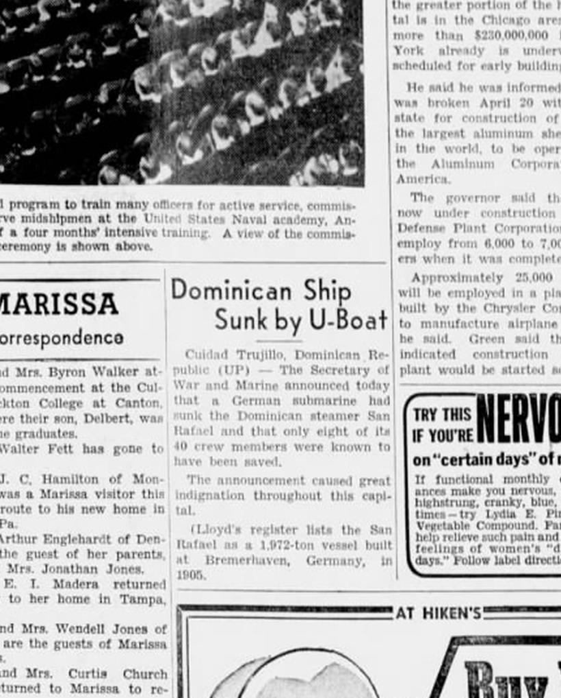

1820–1963 · Library of Congress · Chronicling America
US/DR Newspaper Timeline
The Dominican Republic in the American Press: a bilingual research edition of United States newspaper coverage, 1820-1963La República Dominicana en la prensa estadounidense: una edición de investigación bilingüe de la cobertura periodística, 1820-1963
Language / IdiomaLanguage / Idioma:
Mella Maritime ClippingsRecortes marítimos Mella
Evidence noteNota de evidencia
Transcripts are documented from the clippings themselves; their SHA-256 digests verify. Image digests printed on this page are computed over the shipped scan files. Research notes are labeled claim by claim: material substantiated by a cited primary source is labeled Documented; family and oral accounts are labeled Oral tradition / loosely verified, and may or may not be accurate.Las transcripciones están documentadas desde los propios recortes; sus resúmenes SHA-256 verifican. Los resúmenes de imagen impresos en esta página se calculan sobre los archivos escaneados publicados. Las notas de investigación se etiquetan afirmación por afirmación: lo sustentado por una fuente primaria citada se etiqueta Documentado; los relatos familiares u orales se etiquetan Tradición oral / verificación parcial, y pueden o no ser exactos.
1942-05-08 · The Belleville News Democrat
Dominican Ship Sunk by U-Boat

The Belleville News Democrat, 1942-05-08 · SourceFuente: Newspapers.com
United Press dispatch from Ciudad Trujillo reporting that a German U-boat sank the Dominican steamer *San Rafael* (1,972 tons, built at Bremerhaven in 1905), with only 8 of 40 crew members known saved.
Despacho de United Press desde Ciudad Trujillo informando que un submarino alemán hundió el vapor dominicano *San Rafael* (1,972 toneladas, construido en Bremerhaven en 1905), con solo 8 sobrevivientes confirmados de 40 tripulantes.
TranscriptTranscripciónDocumentedDocumentado
Cuidad Trujillo, Dominican Republic (UP) — The Secretary of War and Marine announced today that a German submarine had sunk the Dominican steamer San Rafael and that only eight of its 40 crew members were known to have been saved. The announcement caused great indignation throughout this capital. (Lloyd's register lists the San Rafael as a 1,972-ton vessel built at Bremerhaven, Germany, in 1905.)
Research note - oral tradition / loosely verifiedNota de investigación - tradición oral / verificación parcial
Part of the May–June 1942 Caribbean U-boat offensive that decimated Dominican steam tonnage and created the wartime shipping crisis later answered by Tito Mella's Compañía Naviera Dominicana schooner program.
Parte de la ofensiva de submarinos alemanes en el Caribe (mayo-junio de 1942) que diezmó el tonelaje a vapor dominicano y provocó la escasez naviera que luego enfrentaría el programa de goletas de la Compañía Naviera Dominicana de Tito Mella.
The Macon News, 1942-05-08 · SourceFuente: Newspapers.com
Associated Press dispatch on the *San Rafael* sinking: torpedoed while returning from Tampa, Florida via Kingston, Jamaica. Eight survivors reached Cayman Brac in a lifeboat while air patrols searched the Caribbean for the 30 missing crewmen.
Despacho de Associated Press sobre el hundimiento del *San Rafael*: torpedeado cuando regresaba de Tampa, Florida, vía Kingston, Jamaica. Ocho sobrevivientes llegaron a Cayman Brac en bote salvavidas mientras patrullas aéreas buscaban a los 30 desaparecidos.
TranscriptTranscripciónDocumentedDocumentado
CIUDAD TRUJILLO, Dominican Republic (AP) — The Dominican Republic steamship San Rafael, 1,161 tons, was torpedoed recently by an enemy U-boat while en route home from Tampa, Fla., by way of Kingston, Jamaica, it was learned from official sources last night. Eight survivors arrived in a lifeboat at Cayman Brac, an island northwest of Jamaica, and declared the entire crew had taken to lifeboats when the ship was attacked. Thirty crewmen, including the captain, were missing but the boats were well supplied and the survivors were hopeful that they would be found by an air patrol which set out searching the Caribbean.
Star News, 1942-06-21 · SourceFuente: Newspapers.com
AP dispatch from Willemstad, Curaçao: a German U-boat intercepted a Dominican vessel, forced it to dump its cargo into the sea, and placed aboard the crew of a previously sunk Dominican ship whose 17-ton cargo had been raided for submarine supplies.
Despacho de AP desde Willemstad, Curazao: un submarino alemán interceptó un buque dominicano, obligó a arrojar su carga al mar y puso a bordo a la tripulación de otro barco dominicano previamente hundido.
TranscriptTranscripciónDocumentedDocumentado
WILLEMSTAD, Curacao, June 20 (AP) — A Dominican ship has reached port with a double crew but no freight as a result of an encounter with a submarine, the newspaper Beurs En Nieuws Berichten said today. The craft was overtaken en route here. The U-boat captain demanded that its cargo be dumped into the sea and the crew of a previously sunk Dominican ship was put aboard. The submarine had seized part of the 17-ton cargo of the first ship for supplies.
The Atlanta Constitution, 1942-12-08 · SourceFuente: Newspapers.com
Washington AP announcement: the U.S. State Department and Agricultural Marketing Administration signed a formal wartime agreement with Tito Mella's Compañía Naviera Dominicana to supply cargo space for food shipments to Puerto Rico.
Anuncio de AP desde Washington: el Departamento de Estado y la Administración de Comercialización Agrícola de EE. UU. firmaron un acuerdo con la Compañía Naviera Dominicana de Tito Mella para proveer espacio de carga de alimentos hacia Puerto Rico.
TranscriptTranscripciónDocumentedDocumentado
WASHINGTON, Dec. 7 (AP) — The Agriculture Department announced today an agreement between the State Department, Agriculture Marketing Administration and the Naviera Dominicana Company of the Dominican Republic whereby additional cargo space will be made available for shipment of food to Puerto Rico.
Research note - oral tradition / loosely verifiedNota de investigación - tradición oral / verificación parcial
Compañía Naviera Dominicana and AMCO (Agencia Marítima y Comercial, founded 1930) were owned by Dominican shipping magnate Ramón Emilio 'Tito' Mella Martí (1907–1991).
La Compañía Naviera Dominicana y AMCO (Agencia Marítima y Comercial, fundada en 1930) eran propiedad del empresario naviero dominicano Ramón Emilio 'Tito' Mella Martí (1907–1991).
Full Office of War Information (OWI) bulletin in the New Orleans *Daily Shipping Guide* detailing the U.S. government contract with Tito Mella's Compañía Naviera Dominicana, explaining that pre-war Puerto Rico food ships had been diverted to carry Allied munitions.
Boletín completo de la Oficina de Información de Guerra (OWI) en el *Daily Shipping Guide* de Nueva Orleans detallando el contrato del gobierno de EE. UU. con la Compañía Naviera Dominicana de Tito Mella, explicando que los buques de preguerra habían sido desviados al transporte de municiones aliadas.
TranscriptTranscripciónDocumentedDocumentado
OFFICE OF WAR INFORMATION — Washington, D. C. — Additional cargo space will become available for shipping food to Puerto Rico through a recent agreement with the Naviera Dominicana Company of the Dominican Republic the Department of Agriculture announced. The new arrangement will augment the present shipping space and alleviate to some extent the critical shortage of shipping facilities between the United States and Puerto Rico. Essential food, and other supplies provided by the Agricultural Marketing Administration, are shipped to Puerto Rico. During the month of November AMA shipped Puerto Rico rice, lard, beans, flour, cornmeal, dried fruits, pickled meats and fish, poultry and dairy feed, laundry soap, and fertilizer. Because of the difficulties of shipping and the severely limited space, only essential cargoes are being sent to the Puerto Rican Islands. Ships that before the war carried huge quantities of foodstuffs to Puerto Rico are now supplying the armies of the United States and the United Nations with munitions, equipment and food.
Research note - oral tradition / loosely verifiedNota de investigación - tradición oral / verificación parcial
Recovered visually from the top-left V-for-Victory column of the New Orleans *Daily Shipping Guide* (missed by automated OCR due to 6-point tabular type).
Recuperado visualmente de la columna superior izquierda del *Daily Shipping Guide* de Nueva Orleans (omitido por el OCR automático debido a la tipografía de 6 puntos).
Detailed trade notice on the U.S.–Naviera Dominicana food pact, noting that the agreement alleviated the critical wartime shortage of shipping facilities to Puerto Rico for staples including rice, lard, beans, flour, and fertilizer.
Nota comercial detallada sobre el pacto alimentario entre EE. UU. y la Naviera Dominicana, señalando que el acuerdo aliviaba la crítica escasez de transporte marítimo hacia Puerto Rico para arroz, manteca, frijoles, harina y fertilizantes.
TranscriptTranscripciónDocumentedDocumentado
Additional cargo space will become available for shipping food to Puerto Rico through a recent agreement with the Naviera Dominicana Company of the Dominican Republic executed by the United States Departments of State and Agricultural Marketing Administration has announced. The new arrangement will alleviate to some extend the critical shortage of shipping facilities between the United States and Puerto Rico. In November, the AMA shipped Puerto Rico rice, lard, beans, flour, cornmeal, dried fruits, pickled meats and fish, poultry and dairy feed, laundry soap and fertilizer.
Maritime intelligence report confirming that Tito Mella's Compañía Naviera Dominicana launched the 132-ton net wooden motor-driven schooner *Inoa* at a shipyard near Ciudad Trujillo — the fourth of six schooners built for wartime Caribbean inter-island trade.
Informe de inteligencia marítima que confirma que la Compañía Naviera Dominicana de Tito Mella botó la goleta de madera a motor *Inoa* (132 toneladas netas) en un astillero cerca de Ciudad Trujillo, cuarta de seis goletas construidas para el comercio interinsular.
TranscriptTranscripciónDocumentedDocumentado
The fourth of six schooners ordered in the Dominican Republic has been launched at a shipyard near Cuidad Trujillo by the Compania Naviera Dominicana. The vessel, named Inoa, 132 tons net, is one of a new fleet of wooden motor-driven schooners constructed to help meet the wartime shipping shortage in the Caribbean inter-island trade.
Follow-up shipping item recording that the launch of the 132-ton schooner *Inoa* in Ciudad Trujillo brought the total number of vessels built by Compañía Naviera Dominicana to four.
Nota naviera de seguimiento registrando que la botadura de la goleta *Inoa* de 132 toneladas en Ciudad Trujillo elevó a cuatro el número de embarcaciones construidas por la Compañía Naviera Dominicana.
TranscriptTranscripciónDocumentedDocumentado
The schooner Inoa, of 132 tons net, was launched recently in Ciudad Trujillo in the Dominican Republic, raising the number of vessels constructed by the Compania Naviera Dominicana to four.
The Miami Herald, 1949-12-25 · SourceFuente: Newspapers.com
Display advertisement revealing the identity and route of the *SS Nuevo Dominicano*: formerly the *SS New Northland*, refitted for 177 passengers, sailing fortnightly between Miami, Kingston, Montego Bay, and Ciudad Trujillo ($240 round trip), plus Nassau runs.
Anuncio desplegado que revela la identidad y ruta del *SS Nuevo Dominicano*: anteriormente el *SS New Northland*, reacondicionado para 177 pasajeros, navegando cada dos semanas entre Miami, Kingston, Montego Bay y Ciudad Trujillo (240 dólares ida y vuelta).
TranscriptTranscripciónDocumentedDocumentado
Once more the glamorous, sun-kissed islands of the Caribbean Sea can be visited on a luxurious cruise ship. The Nuevo Dominicano — Formerly the New Northland. THE NUEVO DOMINICANO is spic and span and has been refitted for Caribbean comforts and all modern services. 177 passengers can be accommodated. Beginning January 21, 1950 the NUEVO DOMINICANO will sail from Miami every two weeks, stopping at Kingston and Montego Bay, Jamaica, B.W.I. and Ciudad Trujillo, Dominican Republic. 12 DAYS AFLOAT and ASHORE. Your round trip fare of $240 plus tax includes transportation and entertainment asea and ashore. Special round trip cruises are also offered to Nassau. Leaving January 19th The Nuevo Dominicano will depart at 6 P.M. and every two weeks thereafter. Round trip fare with stop-over privileges $55 plus tax. One-way fare $30 plus tax. ... EASTERN SHIPPING CORPORATION, 28 S.W. 4th Street, Miami, Fla.
Research note - oral tradition / loosely verifiedNota de investigación - tradición oral / verificación parcial
Tito Mella repeatedly arrived in New York aboard the *SS Nuevo Dominicano* in 1948–1949; by December 1949 the 177-passenger steamer was placed on the Miami–Jamaica–Ciudad Trujillo cruise schedule through Eastern Shipping Corporation.
Tito Mella llegó repetidamente a Nueva York a bordo del *SS Nuevo Dominicano* en 1948–1949; hacia diciembre de 1949 el vapor de 177 pasajeros pasó a cubrir la ruta Miami–Jamaica–Ciudad Trujillo.